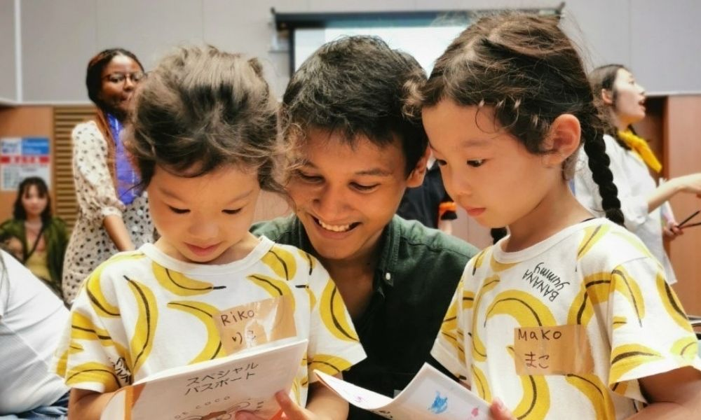
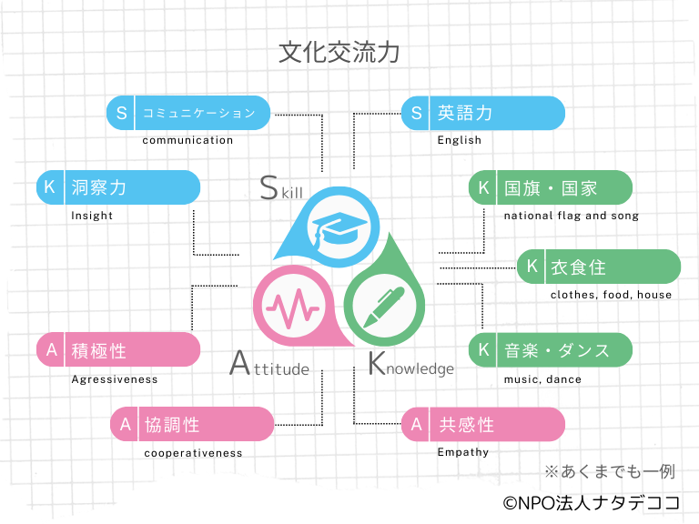
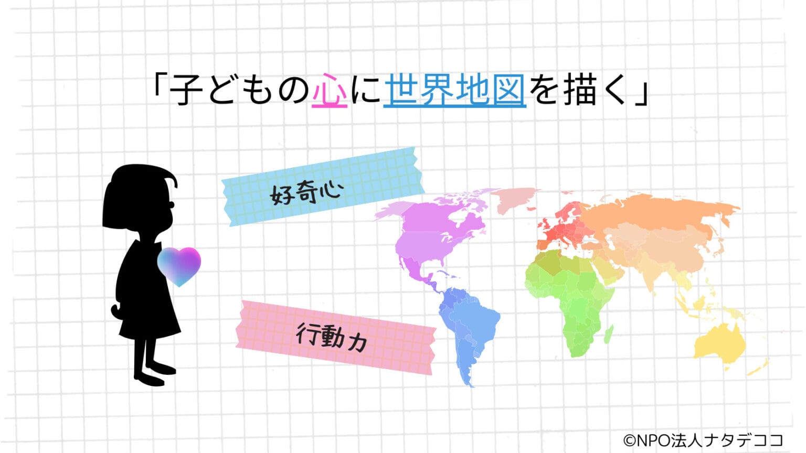
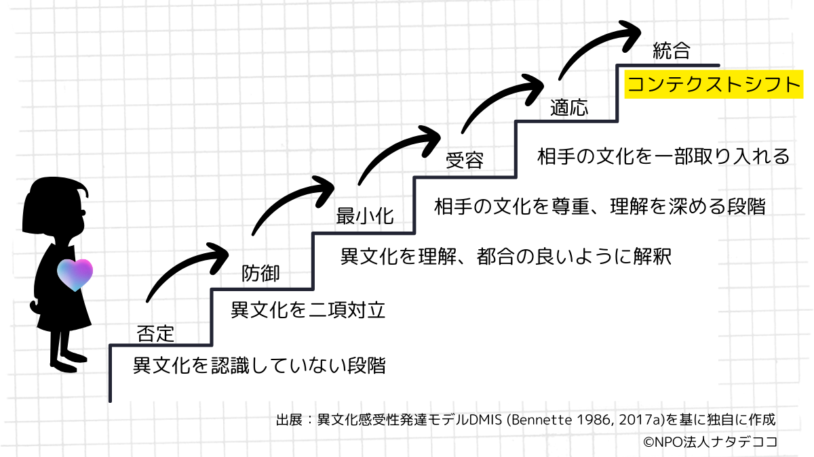

グローバルな人の往来が日常となった現代社会において、子どもたちには「英語が話せること」以上の力が求められています。異なる文化・価値観を持つ人と出会い、理解し、ともに行動できる力――NPO法人ナタデココでは、この力を育てるための体系的なアプローチを「文化交流教育」と呼んでいます。本記事では、文化交流教育の目標・身につく力・4つの実践ステップを、ナタデココ独自の考え方に基づいて解説します。
1. 文化交流教育の目標

文化交流教育の目標は、異文化との交流を通じて、自分と異なる文化・価値観に対して興味を持ち、実際に行動し、相手を尊重する力を身につけることです。平たく言えば、「相手の立場に立てる人間を育てること」です。
多様性が増す社会の中で、子どもたちが個々の違いを乗り越え、互いを理解し尊重し合いながら生きていくための土台を、幼少期から育てることを目指しています。
2. 文化交流教育で身につく力――「文化交流力」とは
ナタデココでは、文化交流教育を通じて育てる力を「文化交流力」と定義しています。文化交流力は、以下の3つの要素が複合的に組み合わさったものです。
| 要素 | 内容 | 具体例 |
|---|---|---|
| Skill（技能） | 実際のコミュニケーションを支える技能 | 英語力、非言語コミュニケーション力など |
| Knowledge（知識） | 異文化を理解するための知識・教養 | 世界の地理・歴史・文化・社会問題への理解 |
| Attitude（姿勢） | 文化交流に向かう根本的な態度 | 積極性・協調性・好奇心・相手への敬意 |
英語力はあくまで「手段のひとつ」であり、文化交流教育の目標そのものではありません。ただし、文化交流を通じて異文化への興味が芽生えることで、英語を学ぶ意欲が自然に高まるという好循環も生まれます。文化交流教育と英語教育は対立するものではなく、うまく組み合わせることでお互いを補い合う関係にあります。
3. 文化交流教育の4つのステップ
文化交流教育は、次の4つのステップによって段階的に進んでいきます。それぞれのステップには明確な役割があり、順を追って積み重ねることで、深い学びが実現します。
文化交流教育のすべての礎は「原体験」にあります。STEP1の最大の目標は、「異文化に触れることは楽しい」という感覚を、知識としてではなく本能的に心で覚えることです。
人は誰でも自分と違う文化に触れるとき、少なからずドキドキする感情を持ちます。このドキドキには「新しいことへの好奇心」と「自分の殻にこもりたい抵抗感」の両面があります。原体験のゴールは、この抵抗感に打ち勝つだけの好奇心を植えつけることです。
だからこそ、ナタデココの文化交流教室では、原体験において「ポジティブな感情を持ち帰ること」を最優先にしています。新しい知識を無理に詰め込んだり、英語を強制したりする必要はありません。心理的な負担をできる限り減らし、外国人と楽しい時間を過ごすことそのものが原体験の本質です。

原体験によって培われるべき力は「好奇心」と「行動力」です。異文化に対して「もっと知りたい」「実際に飛び込んでみたい」という気持ちが生まれること――これが次の学びへの入口になります。
好奇心と行動力は循環関係にあります。興味を持つことで行動に移し、行動することで新たな発見が生まれ、さらなる好奇心が引き出される。この好循環が一度回り始めると、子どもたちは自律的に異文化と関わっていくようになります。
例えば、レストランで見たことのないメニューを見つけたとき、「ちょっと試してみよう」と思えるような感覚。大げさでなく、こういった日常の小さな行動力の積み重ねが、グローバルな場面での行動力へとつながっていきます。

好奇心と行動力という武器を手に入れた子どもたちは、さまざまな文化交流の機会に飛び込んでいきます。その交流の中で何が起きているのかを理解するために、ナタデココでは異文化コミュニケーション学の権威ミルトン・ベネット教授が提唱するDMIS（異文化感受性発達モデル）を参照しています。
DMISは、人が異文化の「違い」をどのように体験・処理するかを、6段階で示したモデルです。
| 段階 | 名称 | 状態 |
|---|---|---|
| 1 | Denial（否定） | 異文化の存在を認識せず、拒絶する |
| 2 | Defense（防御） | 自分の文化が上位であるという意識 |
| 3 | Minimization（最小化） | 「どの国の人も同じ人間だ」と認識し始める |
| 4 | Acceptance（受容） | 異文化が存在することを理解し認める |
| 5 | Adaptation（適応） | 異文化に応じてふさわしい行動が取れるようになる |
| 6 | Integration（統合） | 複数の文化的コンテクストを自在に行き来できる |
このモデルでは、異文化感受性が発達するほど、文化の違いを脅威や単純なステレオタイプとして捉えることが減り、違いを豊かさとして受け取れるようになると考えます。文化交流の体験を積み重ねることで、子どもたちは段階的にこのモデルの上位へと成長していきます。

DMISの最終段階「統合」では、「コンテクスト・シフティング」と呼ばれる能力が期待されます。コンテクストとは「文脈」のことです。同じ言葉や出来事でも、どのような文脈でとらえるかによって、意味はまったく異なります。
たとえば「海」という存在は、「国を閉ざす壁」としても、「世界をつなぐ物流の基盤」としても理解できます。どちらが正しいのではなく、文脈によって見え方が変わるのです。
コンテクスト・シフティングとは、ある現象を理解するとき、自分が最初に用いたコンテクストから、別のコンテクストへと意図的に視点を移動させる力です。文化の違いに直面したとき、「自分の常識」というコンテクストから「相手の常識」というコンテクストへシフトできる力――それが、文化交流教育の最終ゴールである「相手の立場に立つ力」の本質です。
4. まとめ――文化交流教育の全体像
ナタデココが考える文化交流教育は、英語力の習得を直接の目標とするものではなく、「異文化を楽しいと感じる原体験」→「好奇心と行動力の育成」→「文化交流プロセスの体験」→「コンテクスト・シフティング能力の獲得」という4段階の積み重ねによって実現されます。
この体系的なアプローチの出発点となるのが、ナタデココが全国で実施している「文化交流教室」です。外国人メンバーが子どもたちと直接ふれあい、楽しみながら原体験を届けるプログラムは、文化交流教育のSTEP1――すべての礎となる体験の場です。

この記事のまとめ
- 文化交流教育の目標は「相手の立場に立てる人間を育てること」
- 身につく力は Skill（技能）・Knowledge（知識）・Attitude（姿勢）の3要素からなる「文化交流力」
- 4つのステップ：原体験 → 好奇心と行動力 → 文化交流プロセス → コンテクスト・シフティング
- 英語力はあくまで手段。異文化への好奇心と姿勢を育てることが本質
ナタデココの文化交流教室について
本記事で解説した「文化交流教育」のSTEP1を体験できるのが、ナタデココの出張プログラムです。
学校・自治体・地域イベントへの出張対応についてはお気軽にご相談ください。
参考文献
- 山本志都・石黒武人・Milton Bennett・岡部大祐「異文化コミュニケーション・トレーニング」, 三修社, 2022年11月
- Bennett, M. J. (1986a). Towards ethnorelativism: A developmental model of intercultural sensitivity. In R. M. Paige (ed.), Cross-cultural orientation: New conceptualizations and applications (pp.27-70). Lanham, MD: University Press.
- Bennett, M. J. (1986b). A developmental approach to training for intercultural sensitivity. International Journal of Intercultural Relations, 10, 179-196.